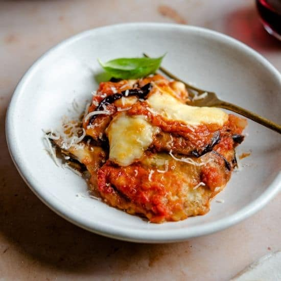

Parmigiana Recipe

Description
Experience the savory charm of our Eggplant Parmigiana. Thin slices of eggplant are fried to a golden perfection and baked with layers of marinara sauce and melted mozzarella. A simple and delightful Italian classic.This dish promises a symphony of flavors in every bite. Buon appetito!
Ingredients
- Eggplant
- Passata
- Mozzarella
- Parmigiano
- Basil
- Frying oil
Method
- Fry the eggplant slices: Heat frying oil in a pan. Fry the thinly sliced eggplant until golden brown on both sides. Place them on paper towels to absorb excess oil.
- Preheat the oven: Set your oven to 375°F (190°C).
- Layer the eggplant: In a baking dish, create layers by placing fried eggplant slices, spreading marinara sauce, sprinkling mozzarella, and adding fresh basil leaves. Repeat until all ingredients are used.
- Finish with cheese: Top the final layer with a generous amount of mozzarella and grated Parmesan cheese.
- Bake: Place the baking dish in the preheated oven and bake until the cheese is melted and bubbly, usually for about 20-25 minutes.
- Serve: Once baked, remove from the oven, let it cool slightly, and then serve your Easy Eggplant Parmigiana. Enjoy the simple and delicious flavors! Buon appetito!